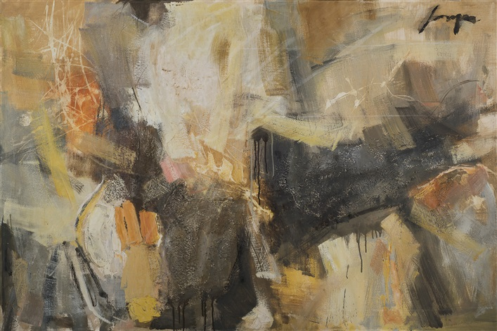

Jose Joya
A pioneer of Abstract Expressionism
Held as a National Artist in 2003
Jose Joya
A pioneer of Abstract Expressionism
Held as a National Artist in 2003
Jose Joya (1931-1995) was a Filipino artist known for his abstract paintings and sculptures that often featured bold colors and geometric shapes. He was a leading figure in Philippine modern art and served as a professor and dean at the University of the Philippines College of Fine Arts.
Rain Clouds, 1976
Sale Date: December 3, 2022
Auction Closed
"Rain Clouds" is a painting by the Filipino artist Jose Joya, who was known for his abstract expressionist style. The painting features a series of large, colorful brushstrokes that suggest the movement and density of clouds in the sky. The overall tone of the painting is somber and moody, with a dark and brooding quality that suggests an impending storm.
Joya's use of abstraction in "Rain Clouds" allows the viewer to experience the painting on a visceral level, evoking the sensation of being outside in the midst of a storm
Torogan, 1985
Sale Date: December 5, 2015
Auction Closed
The painting depicts a traditional Torogan, a type of house found in the Maranao culture of Mindanao in the southern Philippines.
The Torogan is a longhouse characterized by its steeply pitched roof, intricate carvings, and distinctive panolong, or crest, which symbolizes the rank and prestige of the family who owns the house. In Joya's painting, the Torogan is depicted in vibrant colors, with bold, abstract shapes that evoke the ornate carvings and designs found on the actual houses.
Blue Harbor, 19
Sale Date: December 5, 2015
Auction Closed
The painting depicts a harbor scene, with boats and ships anchored in calm blue waters.
The painting is rendered in Joya's signature style, which combines elements of abstraction with figurative motifs. The boats and ships in the painting are represented by bold, simplified forms that are highly stylized, giving them a sense of dynamism and movement. The water is depicted in shades of blue and green, with a subtle texture that creates a sense of depth and fluidity.